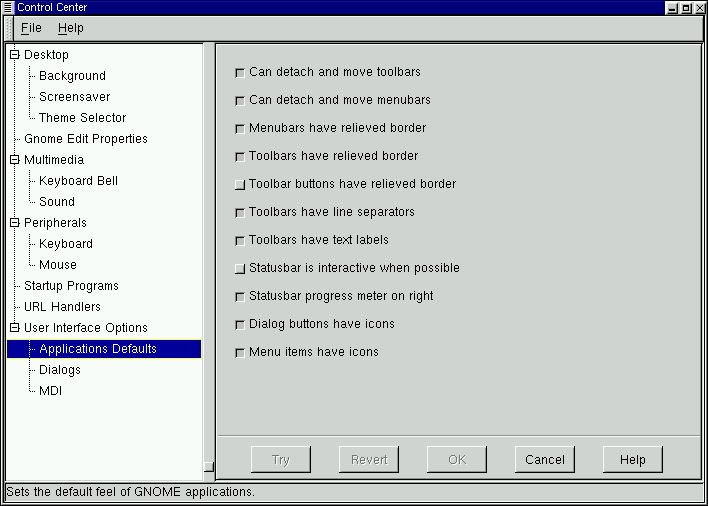
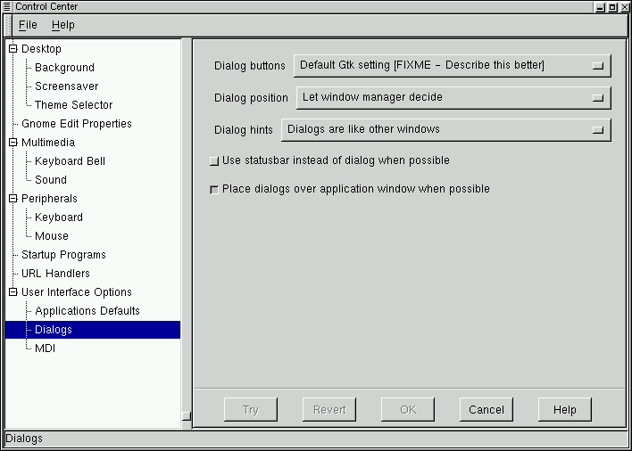
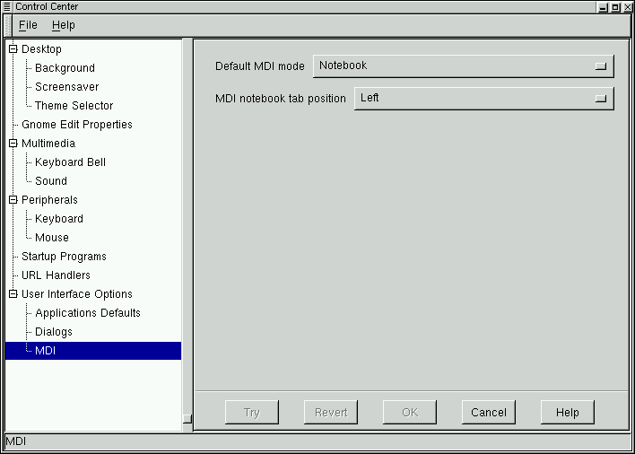

Этот капплет позволяет вам изменить внешний вид GNOME-совместимых приложений - в частности, всех приложений, входящих в комплект поставки GNOME, а также всех приложений, основанных на графическом пакете GTK (the GIMP Toolkit).
Этот капплет позволяет вам изменить некоторые стандартные параметры графического интерфейса GNOME-совместимых приложений.
ВАЖНАЯ ИНФОРМАЦИЯ: Этот капплет позволяет вам заметно изменить стиль оформления ваших приложений, но именно поэтому им следует пользоваться с большой осторожностью.
Отделяемые панели инструментов - по умолчанию, панели инструментов в приложениях можно перетащить с их обычного места вверху окна приложения в любое место экрана. Здесь вы можете отменить этот режим.
Отделяемые панели меню - по умолчанию, панели меню в приложениях можно перетащить с их обычного места вверху окна приложения в любое место экрана. Если вам это не нравится, вы можете отменить этот режим.
Рельефные рамки панелей меню - по умолчанию, панели меню снабжены рельефными рамками. Если вам это не нравится, то можете отменить этот режим.
Рельефные рамки панелей инструментов - по умолчанию, панели инструментов снабжены рельефными рамками. Если вам это не нравится, вы можете отменить этот режим.
Рельефные рамки панелей с кнопками - по умолчанию, панели с кнопками управления аппликаций не имеют рельефных рамок, но они появляются, когда курсор мыши над панелью. Вы можете включить этот режим, чтобы панели с кнопками всегда имели рельефные рамки.
Разделители в панелях инструментов - по умолчанию, кнопки в панелях инструментов разделены короткими вертикальными линиями. Если вам это не нравится, вы можете отменить этот режим.
Подписи в панелях инструментов - по умолчанию, кнопки в панелях инструментов снабжены короткими подписями. Если вы хорошо знакомы с пиктограммами, используемыми приложениями, и не нуждаетесь в подписях, вы можете отменить этот режим.
Statusbar in interactive when possible - в некоторых приложениях строка статуса (как правило, расположенная внизу окна) может быть выделена в отдельное окно. Если включить этот режим, то по умолчанию все эти приложения будут выделять строку статуса в отдельное окно.
Statusbar progress meter on right - в некоторых приложениях строка статуса содержит полосу, показывающую прогресс той или иной операции. По умолчанию, эта полоса располагается в правой части строки статуса. Если отключить этот режим, то она переместится в левую часть строки статуса.
Пиктограммы на кнопках диалога - некоторые кнопки в диалогах (например, кнопка "OK") могут быть снабжены маленькими пиктограммами. Если вы не хотите использовать пиктограммы, отмените этот режим.
Пиктограммы в меню - некоторые элементы в меню приложений могут быть снабжены маленькими пиктограммами. Если вы не хотите использовать пиктограммы, отмените этот режим.
Рисунок 9-14. Applications Defaults Capplet

Этот капплет позволяет вам изменить параметры для окон-диалогов, используемых GNOME-совместимыми приложениями. Окно-диалог - это окно, запускаемое некоторым приложением для выполнения какой-либо операции. Примером окна-диалога может служить диалог печати, появляющийся при нажатии на кнопку Печать в приложении (или выборе соответствующего элемента в меню). Этот диалог позволяет вам выбрать параметры печати и начать печать. С помощью капплета "Диалоги" вы можете изменить следующие параметры:
Кнопки в диалогах - вы можете использовать стандартное расположение кнопок, поместить кнопки на краю, поместить кнопки кнопки слева (left-justify) или справа (right-justify).
Позиция окна - вы можете выбрать, в каком месте экрана должны появляться окна-диалоги. Вы можете оставить это на усмотрение диспетчера окон, заставить окна появляться в центре экрана или на месте курсора мыши в момент запуска.
Подсказки - это небольшие справочные сообщения, появляющиеся, когда вы задерживаете курсор мыши над кнопкой или частью диалога. Вы можете выбрать, хотите ли вы, чтобы подсказки оформлялись так же, как и обычные окна, или же оставить их оформление на усмотрение диспетчера окон.
Вы можете заставить приложения использовать строку статуса вместо диалогов (для тех приложений, которые это поддерживают). Это применяется только к диалогам-сообщениям, которые не требуют никакого ответа или информации от вас.
Вы можете также потребовать, чтобы окна-диалоги появлялись поверх окна вызвавшего их приложения. Это имеет смысл сделать, если вы привыкли работать с какой-либо другой операционной системой - большинство из них располагают окна-диалоги именно так.
ВАЖНАЯ ИНФОРМАЦИЯ: Этот капплет позволяет вам заметно изменить стиль оформления ваших приложений, но именно поэтому им следует пользоваться с большой осторожностью.
Рисунок 9-15. Капплет "Диалоги"

С помощью этого капплета вы можете изменить настройку МДИ в GNOME приложениях. МДИ (MDI - Multiple Document Interface) задает способ одновременного показа многих документов в приложениях.
ВАЖНАЯ ИНФОРМАЦИЯ: Этот капплет позволяет вам заметно изменить стиль оформления ваших приложений, но именно поэтому им следует пользоваться с большой осторожностью.
По умолчанию, приложения GNOME, работающие с несколькими документами одновременно, используют стиль "телефонная книга": каждому документу соответствует язычок-закладка. Если вам это не нравится, вы можете выбрать другой стиль.
Кроме стиля "телефонная книга", вы также можете использовать стили Toplevel и Modal. В стиле Toplevel вы можете иметь только один открытый документ; чтобы перейти к другому документу, вам следует закрыть нынешний. В стиле Modal вы можете иметь одновременно несколько открытых документов, но в каждый момент показывается только один из них. (Для пользователей редактора Emacs: стиль Modal аналогичен понятию буфера в Emacs.)
В стиле "телефонная книга" вы можете выбрать расположение закладок: они могут быть показаны сверху, снизу, слева или справа. Следует иметь в виду что все эти настройки применяются только к GNOME-совместимым приложениям.
Рисунок 9-16. Капплет МДИ

| Пред. | Начало | След. |
| Диспетчер сеансов | Уровень выше | Несколько слов о сеансах работы |